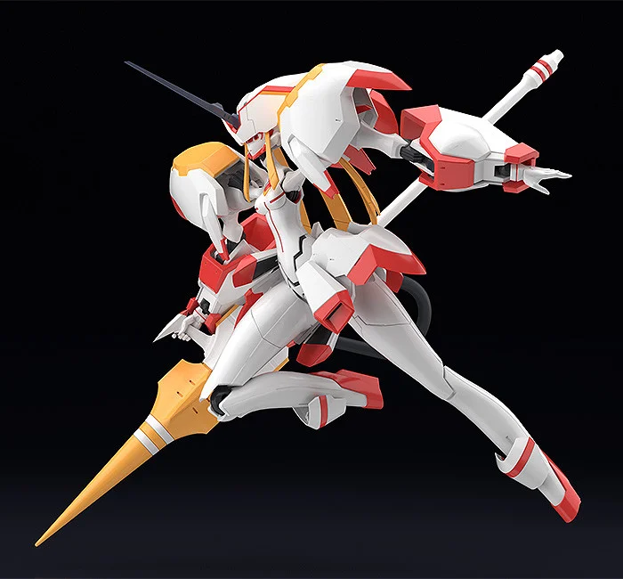
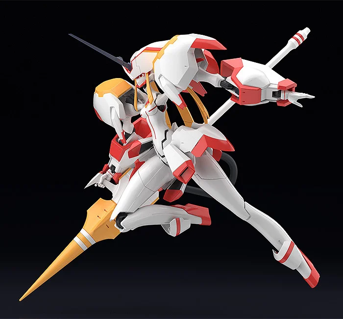

Zero Two é uma personagem cativante e enigmática do anime "Darling in the Franxx". Com seu cabelo rosa vibrante e chifres distintivos, ela exala uma mistura de sensualidade e mistério. Sua personalidade forte e determinada contrasta com sua vulnerabilidade emocional, tornando-a uma figura fascinante para os fãs. Zero Two é conhecida por sua conexão profunda com Hiro e sua jornada em busca de sua humanidade perdida em um mundo distópico. Ela continua a inspirar admiradores com seu carisma único e sua complexidade como personagem.


 
